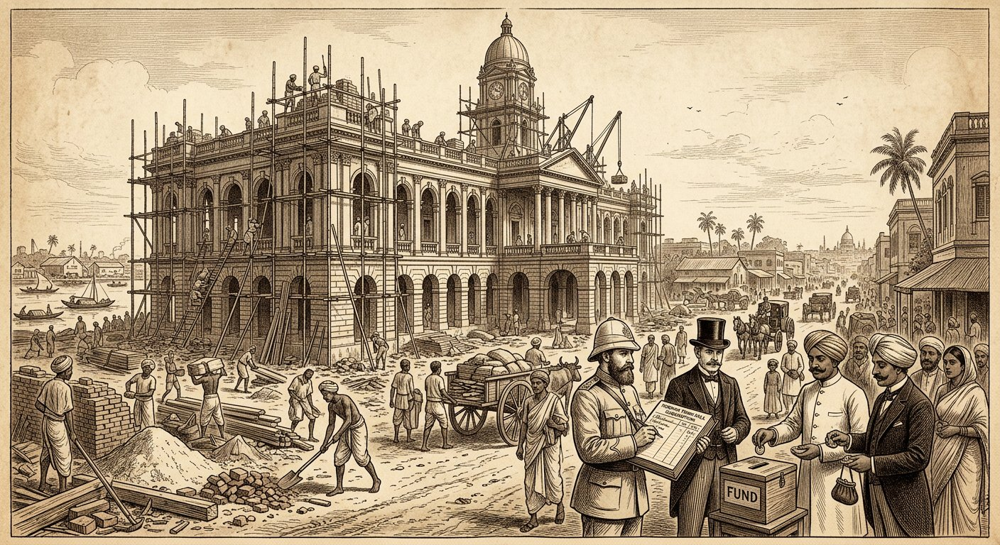
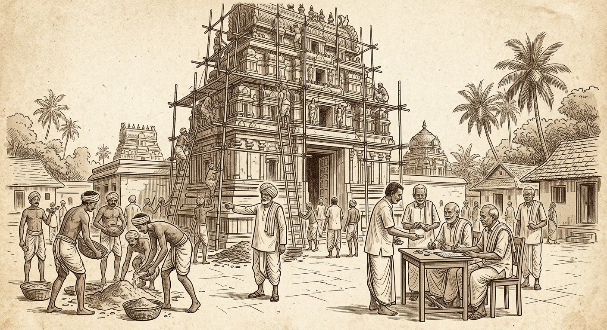
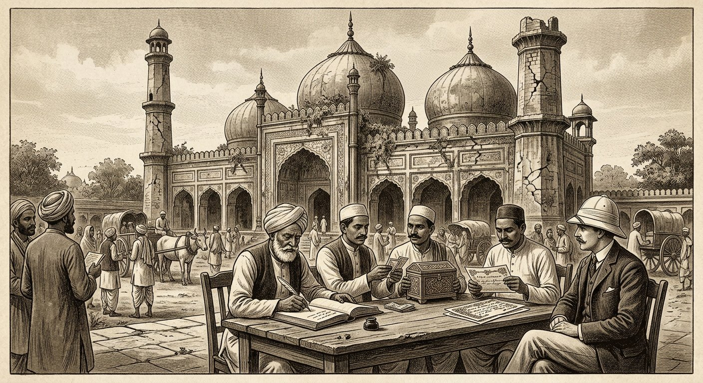
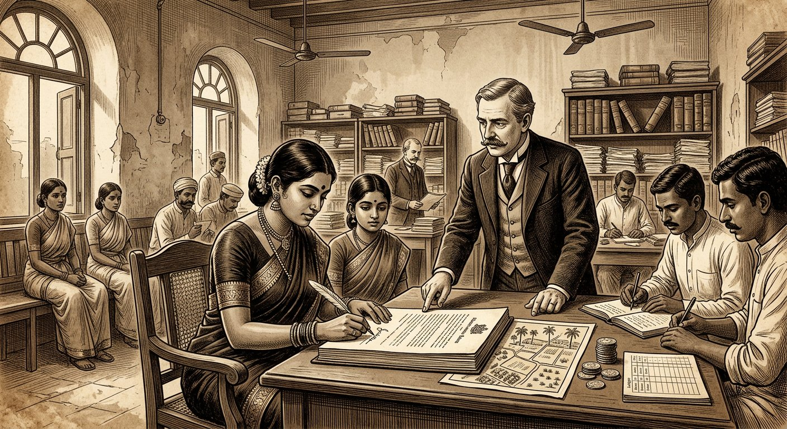
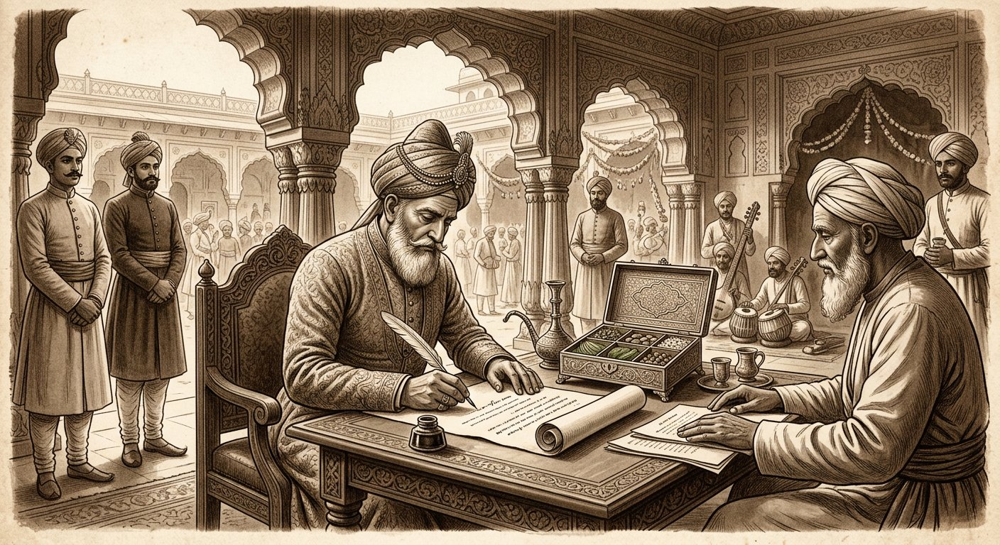

Indian Contract Act, 1872 — Sections 2(d), 2(f), 23 & 25 | Meaning & nature of consideration • Privity of contract vs privity of consideration • Subscription promises • S. 25 exceptions • Lawful objects. Comprehensive deep notes strictly anchored in DU Case Material (2023) — Cases 13–17 (Book pp. 54–64) — with full statutory text, elements, illustrations, flowcharts, hypothetical case visuals, and DU-pattern PYQs with model answers.
📚 Primary source: DU Case Material LB-102 (2023)📜 Bare Act: ICA, 1872 (Ss. 2(d), 2(f), 23, 25)⚖️ 5 DU cases in full IRAC++ format📝 12 PYQs + best model answers
Part A — The price of a promise
S. 2(d) — meaning, nature & essentials of consideration ⭐⭐⭐
S. 2(d) (memorise verbatim): "When, at the desire of the promisor, the promisee or any other person has done or abstained from doing, or does or abstains from doing, or promises to do or to abstain from doing, something, such act or abstinence or promise is called a consideration for the promise." S. 2(f): "Promises which form the consideration or part of the consideration for each other are called reciprocal promises." (See S. 23 ills. (a)–(d): each party's promise = consideration for the other's.)
Essentials distilled (7 tests — run them in every answer)
Essential
Content + DU authority
1. At the desire of the promisor ⭐
Act must be requested by the promisor — voluntary/officious acts don't count. Doraiswami (Cornish J.): "There must have been some request by the promisor to the promisee to do something" — repairs contracted before subscription + no request = bare promise. Kedarnath contrast: subscribers knew "on the faith of their subscription an obligation was to be incurred" = implied request.
2. By promisee OR any other person ⭐
India abolishes privity of consideration — a stranger's act can be consideration. Chinnaya (Kindersley J.): "very wide definition … promisee, or any other person" — donor-sister's gift = consideration for donee's annuity promise to plaintiffs. Contrast English Tweddle v Atkinson.
3. Past, present or future
"Has done … does … promises to do" — executed (act done), executory (promise for promise — S. 2(f)), and past (already done at desire — linked to S. 25(2)).
4. Something of value in law
Need not be money — act, abstinence, forbearance, detriment. Kedarnath: incurring contractor liability = consideration. Must be real, not illusory; need not be adequate (S. 25 Expl. 2).
5. Must be lawful
S. 23's six bars (Part B): forbidden by law, defeating law, fraudulent, injurious, immoral, opposed to public policy.
6. Must be real, not pre-existing duty
Doing what one is already bound to do (public duty, contractual duty to same promisor) = no consideration. Lalman (Topic 2): munim's pre-undertaken search duty.
7. Must move as part of the bargain
Doraiswami + In re Hudson (Pearson J.): liabilities undertaken not as part of the bargain with the promisor ("no binding obligation between themselves and Mr. Hudson") = no consideration, however real the expenditure.
Desired? Requested by promisor? (Doraiswami)
→
From whom? Promisee OR stranger ✔ (Chinnaya)
→
Bargain-linked? Part of exchange? (Hudson)
→
Lawful + real? S. 23 + not pre-existing duty
S. 2(d) vs English law: England needs consideration to move from the promisee (Tweddle); India expressly allows "any other person" — the statutory basis of Chinnaya. But note: India still requires privity of contract to sue (plaintiff must be a party/promisee) — subject to exceptions like Khusaini Begam (Part D).
Part B — Lawfulness filter
S. 23 — lawful consideration and objects ⭐⭐⭐
S. 23: "The consideration or object of an agreement is lawful, unless — it is forbidden by law; or is of such a nature that if permitted, it would defeat the provisions of any law; or is fraudulent; or involves or implies injury to the person or property of another; or the Court regards it as immoral, or opposed to public policy. In each of these cases … Every agreement of which the object or consideration is unlawful is void."
The six bars with illustrations (memorise pairs)
Bar
Illustration(s) + meaning
1. Forbidden by law
(f) buying public employment (Rs 1,000 for a post) → void. "Law" = enacted law + rules with force of law.
2. Defeating provisions of law
(i) defaulter's benami re-purchase of revenue-sold estate → void (renders transaction "in effect a purchase by the defaulter").
3. Fraudulent
(e) dividing fraud gains → void; (g) agent's secret deal for a lease behind principal's back → void (fraud by concealment).
4. Injury to person/property
(h) dropping a robbery prosecution for restoration → void (compounding non-compoundable offence harms justice + person). Principle extends to assault, libel, property damage bargains.
5. Immoral
(j) mukhtar's paid influence → void; (k) letting daughter for concubinage → void "though … not punishable under IPC" — court's moral lens, not criminality, decides.
Lawful pairs (ills. a–d): house-for-Rs 10,000 (a); surety/time-grant (b); ship insurance (c); child maintenance for annual payment (d) — each party's promise lawful consideration for the other's (S. 2(f) reciprocal promises). Adjunct — S. 24 (just beyond syllabus, one line): if any part of a single consideration/object is unlawful → whole agreement void (indigo + illegal traffic, one salary).
S. 23 answer skeleton: (1) Quote S. 23 + identify which of the six bars is alleged. (2) Match an illustration. (3) Apply to facts — "forbidden" needs a prohibiting law; "immoral" needs court's view (ill. k: IPC irrelevant); "public policy" needs a recognised head. (4) Conclude void (wholly; S. 24 if part-unlawful single consideration).
Part C — S. 25
S. 25 — agreement without consideration + exceptions ⭐⭐⭐
Rule: "An agreement made without consideration is void, unless — (1) it is expressed in writing and registered … and made on account of natural love and affection between parties standing in a near relation; or (2) it is a promise to compensate, wholly or in part, a person who has already voluntarily done something for the promisor, or something which the promisor was legally compellable to do; or (3) it is a promise, in writing and signed by the person to be charged (or authorised agent), to pay wholly or in part a debt barred by limitation." — "In any of these cases, such an agreement is a contract." Explanation 1: completed gifts (donor–donee) unaffected. Explanation 2:inadequacy ≠ no consideration — but relevant to free consent. Illustrations: (a) Rs 1,000 gift promise → void; (b) registered father→son Rs 1,000 for love → contract; (c) purse found, Rs 50 promised → contract; (d) supporting promisor's infant son, expenses promised → contract; (e) written promise to pay Rs 500 of time-barred Rs 1,000 → contract; (f) Rs 1,000 horse for Rs 10, free consent → contract; (g) same facts, consent disputed → inadequacy evidences coercion/pressure.
Exception
Ingredients (all needed)
Traps
(1) Love & affection
(i) writing + registration; (ii) natural love and affection (proved, subsisting — not past quarrel); (iii) near relation parties.
Unregistered family arrangement fails (1) (may survive as family settlement on other grounds); stranger's love letter fails (iii); "natural" is fact-tested.
(2) Past voluntary service
(i) service already done voluntarily for promisor (or what he was legally compellable to do); (ii) promise to compensate for it. No writing needed.
Must be voluntary — done under pre-existing duty or at promisor's desire with payment terms = different analysis (S. 2(d)/quantum). Ills. (c)–(d). Contrast Doraiswami: trustees' repairs weren't at subscriber's desire at all.
(3) Time-barred debt
(i) written + signed (no registration needed); (ii) existing debt enforceable but for limitation; (iii) promise to pay wholly/partly.
Must be a debt (liquidated money due) — not damages/claims; must have been enforceable (not void ab initio); part-payment promise valid (ill. e).
Expl. 1 — Gifts
Actually made (delivered/registered) gifts valid without consideration.
Mere promise to gift = void (ill. a). Gift needs Transfer of Property Act compliance.
Horse ills. (f)/(g) — same facts, opposite consent findings.
No consideration? → prima facie VOID (ill. a)
→
Check (1): written + registered + love + near relation?
→
Check (2): past voluntary service + compensate?
→
Check (3): written + signed + time-barred debt?
=
Any yes → CONTRACT
Part D — Who can sue?
Privity of contract & of consideration + exceptions ⭐⭐⭐
Two distinct doctrines — DU's favourite confusion trap:
Doctrine
Rule in India
Authority
Privity of CONSIDERATION (must consideration move from plaintiff?)
❌ ABOLISHED — S. 2(d) "promisee or any other person" — a stranger's act suffices.
Chinnaya: donor-sister's gift = consideration for annuity promise; Kindersley J. relies on S. 2(d)'s "very wide definition". (English Tweddle rejected on this point.)
Privity of CONTRACT (must plaintiff be a party?)
✅ RETAINED as general rule — only a party/promisee can sue; a mere beneficiary generally cannot. But subject to exceptions.
Tweddle v Atkinson (general rule); Khusaini Begam (equitable exception — charge on property); Chinnaya (plaintiffs were parties via Kararnama A — so no privity-of-contract breach at all).
Chinnaya's English-law tour (Innes J.) — know the triad
Case
Facts in brief
Holding on stranger's suit
Dutton v Poole (2 Lev 210)
Son promised father (refraining from felling £1,000 timber) to pay daughter Grisel £1,000 marriage portion.
✅ Daughter could sue — son got timber benefit; daughter lost portion through promise ("consideration indirectly moved").
Rockwood's case
Eldest son promised father (refraining from charging lands) annuities to younger sons.
✅ Younger sons could sue — same indirect-consideration logic.
Tweddle v Atkinson (30 LJQB 265)
Two fathers agreed each to pay the husband; husband given "full power to sue".
❌ Husband could not sue — lost nothing, no benefit/detriment shift; "not a party to the consideration".
Innes J.'s application: present case = Dutton, not Tweddle — defendant gained "a large estate", plaintiffs "lost the yearly sum the donor would otherwise have paid" → consideration indirectly moved from plaintiffs → decree. Kindersley J.'s shorter route: gift deed B + Kararnama A = one transaction; S. 2(d) satisfied anyway.
Exceptions to privity of CONTRACT (beneficiary CAN sue) ⭐
Exception
Content + authority
1. Charge/trust for beneficiary ⭐
Where contract charges property / creates trust for a third person, beneficiary sues in equity. Khusaini Begam: Rs 500/month charged on specified properties; plaintiff "the only person beneficially entitled" → "clearly entitled to proceed in equity". (Tweddle = assumpsit, inapplicable.)
2. Marriage/family arrangements
Settlements for minors' benefit (parents contracting). Khusaini Begam policy: minors' marriages "contracted by parents and guardians" — applying Tweddle "might occasion serious injustice".
3. Acknowledgement / estoppel
Party, by separate conduct/agreement, acknowledges liability to third person (creates privity with him).
4. Assignment
Contractual benefits assigned → assignee sues (subject to equities; burdens need novation).
5. Agency (undisclosed principal)
Principal sues on agent's contract (Ss. 231–232).
6. Covenants running with land
Burden/benefit annexed to property binds/sues successors.
⚠️ Precision point for toppers:Chinnaya is NOT a privity-of-contract exception — the plaintiffs held a direct promise (Kararnama A) and were promisees; the case kills only privity of consideration. Khusaini Begam IS the privity-of-contract exception — plaintiff was "no party to the document" yet enforced it via charge + equity. Examiners test exactly this distinction.
Part E — DU Case 13 (Book p. 54–55)
DU Case 13 ★★ Subscription + faith-liability = enforceable contract
Kedarnath Bhattacharji v Gorie Mahomed, (1886) 7 ID 64 (Cal. — Petheram CJ, Reference)
S. 2(d) ICA | Questions: (1) Maintainable representative suit? (2) Was the Rs 100 subscription enforceable? | Answer: Yes to both — subscription given knowing contractor-liability would follow = promise for good consideration. (Small Cause Court to decree + costs.)

Hypothetical visual — Howrah, 1880s: the Town Hall rises (Rs 26,000 → Rs 40,000) on the faith of subscriptions — including Gorie Mahomed's Rs 100.
Facts (detailed)
Scheme: Howrah Municipality Commissioners promoted a Town Hall, conditional on sufficient subscriptions; constituted themselves trustees of the Town Hall Fund by deed.
Contract on faith: once subscriptions sufficed, Commissioners (incl. plaintiff, Vice-Chairman) contracted with a builder (Rs 26,000 estimate); as subscriptions grew, plans enlarged → Rs 40,000; Commissioners personally liable throughout.
Defendant: subscribed Rs 100 in the book; refused to pay → sued in Howrah Small Cause Court by plaintiff (as Vice-Chairman/trustee, one of the contractor-liable persons).
Small Cause Judge: Registrar couldn't grant leave; trust property → S. 437 CPC; suit bad ab initio; and (citing Kedar Nath Mittra v Alisar Rahoman) defendant "uneducated", couldn't know Town Hall's object/utility → no legal obligation → dismissed, contingent reference to HC on (1) maintainability, (2) trustees' entitlement.
Issues
Was the representative suit maintainable (CPC + trust)?
Did the subscription promise have consideration?
Plaintiff-trustee: all contractor-liable persons could jointly sue (CPC representative action cures form); subscription invited knowing liability would be incurred on its faith = consideration.
Defendant: plaintiff had no right to sue (trust/CPC bars); mere charity subscription = no consideration; uneducated subscriber, no understanding of object.
Decision & reasoning (Petheram CJ)
(1) Maintainable: plaintiff may sue on behalf of himself and all jointly interested under CPC, trustee or not — representative form "cure[s] any technical defect".
(2) Consideration — the classic passage: "great many subscriptions … cannot be recovered … because there is no consideration." But here subscribers knew "the purpose … and … on the faith of their subscription an obligation was to be incurred to pay the contractor." The subscriber "says, in effect — In consideration of your agreeing to enter into a contract to erect … I undertake to supply the money up to my subscription." = "perfectly valid contract … for good consideration … enforced … by the persons to whom the liability is incurred."
Orders: both questions affirmative; Small Cause Court to decree the Rs 100 + costs (incl. HC hearing).
Ratio: A charity subscription is enforceable where the subscriber knows the fund-seekers will incur liability on its faith and they do — the incurred/planned liability is S. 2(d) consideration (implied bargain: money for undertaking).
Exam use: lead subscription-consideration authority; quote the "In consideration of your agreeing…" passage; pair with Doraiswami (no request → fails) and Abdul Aziz (nothing done → fails).
Part F — DU Case 14 (Book pp. 56–57)
DU Case 14 ★★ No request + no bargain = bare promise (Kedarnath distinguished)
S. 2(d) ICA; In re Hudson | Question: Can temple trustees recover Rs 125 subscribed AFTER repair liability was incurred, with no request/bargain? | Answer: No — "bare promise unsupported by consideration". (Revision allowed; suit dismissed with costs throughout.)

Hypothetical visual — Tamil Nadu, 1928: temple repairs begin in February on village funds; only in October is Rs 125 subscribed — after the liability, without any bargain.
Facts (detailed)
Feb 1928: temple trustees already contracted for repairs; maistry paid from village common fund.
Oct 1928: more money needed → subscriptions invited; petitioner subscribed Rs 125.
Plaint's pleaded consideration: "relying on the promise … [trustees] incurred liabilities in repairing the temple." Lower court decreed → revision.
Issue
Does trustees' repair expenditure, incurred substantially before and independent of the subscription, constitute S. 2(d) consideration?
Trustees: Kedarnath applies — liabilities incurred on strength of subscription = consideration.
Subscriber: no request ever made to him; no undertaking by trustees as part of any bargain with him — bare promise.
Decision & reasoning (Cornish J.)
S. 2(d) test: promisee must have acted on "more than a bare promise" — "some bargain between them in respect of which the consideration has been given." Kedarnath's passage presupposes the subscriber's request/implied bargain ("In consideration of your agreeing…").
Rule: "mere promise to subscribe … or entry in a subscription list" ≠ consideration; "There must have been some request by the promisor to the promisee to do something in consideration of the promised subscription."
In re Hudson (54 LJ Ch 811; Pearson J.): chapel-debt contribution; committee's liabilities ≠ consideration — "no binding obligation between themselves and Mr. Hudson" — adopted.
Application: "not pleaded, nor is there evidence, that there was any request … or any undertaking by them to do anything" → bare promise → suit "ought to have been dismissed."
Order: revision allowed with costs throughout.
Ratio: Subscription expenditure is consideration only if undertaken at the subscriber's desire as part of the bargain (S. 2(d) "at the desire of the promisor") — prior/independent liabilities don't qualify.
Exam use: the "at the desire" authority; use to defeat after-the-fact reliance claims; Kedarnath–Doraiswami–Abdul Aziz form the subscription trilogy (bargain ✔ / no bargain ✘ / nothing done ✘).
Part G — DU Case 15 (Book pp. 58–59)
DU Case 15 ★★ Gratuitous mosque promise + dead cheque — nothing enforceable
Abdul Aziz v Masum Ali, AIR 1914 All 22 (Richards CJ)
S. 25 ICA (no consideration) | Question: Are a treasurer's own Rs 500 mosque subscription and a stale Rs 500 cheque recoverable from his heirs? | Answer: No — gratuitous promise; gratuitous treasurership; no lifetime liability → none vs heirs. (Appeal allowed; both Rs 500 claims dismissed.)

Hypothetical visual — Agra, 1907: subscriptions mount for Masjid Hamman Alawardi Khan — but no repair is ever begun, and one cheque quietly goes stale.
Facts (detailed)
1907 fund for Masjid Hamman Alawardi Khan repairs: committee sanctioned Rs 3,000; Hakim Shafi Ullah paid Rs 100 cash; Munshi Abdul Karim promised Rs 500 (and became treasurer, receiving the Rs 3,100); Munshi Jan Mohammad promised Rs 500 via cheque (12 Sept 1907).
Cheque saga: presented 29 Sept 1907 → returned ("endorsement not regular"); re-presented 12 Jan 1909 → "out of date".
Deaths + suit: Karim died 20 Apr 1909; suit vs heirs 14 Apr 1910; Jan Mohammad died May 1910. Rs 3,100 admitted; contested: Karim's Rs 500 + Jan's Rs 500. Admitted: "nothing has been done" on repairs. Trial court: Karim's Rs 500 decreed, Jan's dismissed; first appeal: whole claim decreed → second appeal.
Issues
Was Karim's promised subscription enforceable (does treasurership change it)?
Was Karim liable (as agent?) for the stale cheque?
Do liabilities survive against heirs?
Committee: treasurer's promise + office imply enforceability; as agent, Karim's gross negligence on the cheque caused Rs 500 loss → liable; heirs inherit liability.
Heirs: mere gratuitous promise (outsider's admittedly unenforceable; treasurership adds nothing); no agency, no gross negligence (natural endorsement error; delay explained by stalled works); no lifetime liability → no heir liability.
Decision & reasoning (Richards CJ)
Karim's Rs 500: "mere gratuitous promise" — concededly unenforceable from an outsider; treasurership makes no difference; no sum ever set aside. → dismissed.
Jan's cheque: treasurership "purely gratuitous" — Karim "might at any time have refused to go on"; not an agent; even if agent, no gross negligence (natural mistake + work-delay explanation). → no lifetime liability.
Heirs: "if no suit lay … in his lifetime, no suit could be brought after his death against his heirs."
Order: appeal allowed; decree varied; both Rs 500 claims dismissed (costs: appellants in appeal; proportionate below).
Ratio: (1) A gratuitous subscription with no Kedarnath-type faith-liability is void for want of consideration (S. 25) — office-holding doesn't supply it. (2) Gratuitous agency attracts no negligence liability for mere non-feasance short of gross fault. (3) No lifetime cause → no heir liability.
Exam use: classic S. 25 application; completes the subscription trilogy; also use for gratuitous-agent + heir-liability side points.
Part H — DU Case 16 (Book pp. 60–61)
DU Case 16 ★★ Stranger to consideration CAN sue (S. 2(d))
Venkata Chinnaya Rau v Venkataramaya Garu, (1881) 1 ID 137 (Mad. — Innes + Kindersley JJ.)
S. 2(d) ICA | Question: Can annuity plaintiffs, strangers to the gift-consideration, enforce the donee's Kararnama promise? | Answer: Yes — consideration indirectly moved from them (Dutton v Poole); S. 2(d) "any other person". (Second appeal dismissed with costs.)

Hypothetical visual — 9 April 1877: a sister gifts her estate to her daughter (deed B) — and the daughter promises the plaintiffs Rs 653 yearly (Kararnama A). Then stops paying.
Facts (detailed)
9 Apr 1877: plaintiffs' sister gifted landed property to defendant (her daughter) by registered deed B, stipulating Rs 653/year annuity to plaintiffs (as donor had paid) until a village given them.
Same date: defendant executed Kararnama A to plaintiffs: "According to … paragraph 12 of the deed of gift … I hereby agree to continue to carry out in your favour, perpetually and hereditarily … the terms stated."
Default + pleas: annuity unpaid → suit. Pleas: coercion (concurrent finding: voluntary + registered — rejected) and strangers to consideration can't sue. Courts below decreed → second appeal. (Stamp objection: admitted as duly stamped; properly an agreement under 1869 Act, not a bond.)
Issue
Whether plaintiffs, strangers to the consideration (the gift), can enforce Kararnama A.
Plaintiffs: direct promise in A; donor ceased paying only because the source passed to defendant — consideration indirectly moved (Dutton v Poole); S. 2(d) covers "any other person".
Defendant: Tweddle v Atkinson — strangers to consideration cannot sue; coercion; stamp defect.
Decision & reasoning
Innes J.: English rule: plaintiff sues only if consideration moved directly or indirectly from him. Dutton v Poole (£1,000 timber/daughter portion) + Rockwood (annuities to younger sons): indirect consideration → suit allowed — defendant's act "shut out the plaintiff from a certain benefit and substituted a future benefit." Tweddle distinguished: husband lost nothing, no benefit/detriment shift. Here = Dutton: defendant "gained a large estate", plaintiffs "lost the yearly sum the donor would otherwise have paid" → consideration indirectly moved → enforceable.
Kindersley J. (concurring): "but for the very wide definition" of S. 2(d) ("promisee, or any other person") he'd have doubted; gift + Kararnama = one transaction → sufficient consideration.
Order: appeal dismissed with costs.
Ratio: Under S. 2(d), consideration may move from a stranger ("any other person") — privity of consideration abolished; plaintiffs holding the promise may sue though the benefit flowed from another's act. (Plaintiffs were promisees — no privity-of-contract issue arose.)
Exam use: THE S. 2(d) stranger-consideration authority; master the Dutton–Rockwood–Tweddle triad + the two concurring routes; stress Kindersley J.'s "very wide definition" quote.
Part I — DU Case 17 (Book pp. 62–64)
DU Case 17 ★★ Non-party beneficiary enforces charged allowance in equity
Nawab Khwaja Muhammad Khan v Nawab Husaini Begam, (1910) 37 IA 152 (PC — Ameer Ali J.)
Privity of contract (exception) | Question: Can a daughter-in-law, no party to the agreement, enforce Rs 500/month kharch-i-pandan charged on property — despite leaving her husband? | Answer: Yes — sole beneficial owner under a property charge sues in equity (Tweddle inapplicable); no cohabitation condition; misconduct unproved. (Appeal dismissed; HC affirmed.)

Hypothetical visual — 25 October 1877: the Nawab charges his estates for his minor son's bride's Rs 500 monthly kharch-i-pandan — "in perpetuity", without conditions.
Facts (detailed)
Agreement (25 Oct 1877): defendant (father-in-law) declared, pre-marriage (fixed 2 Nov 1877) and "in consideration of" it, to pay plaintiff Rs 500/month "in perpetuity" as kharch-i-pandan (betel-box expenses) from marriage/"reception", charging specified properties. Both spouses minors.
Cohabitation: reception delayed to 1883 (minority); lived together till 1896; plaintiff then left for Moradabad (visited frequently by husband; no restitution suit ever filed).
Defences: (1) plaintiff no party → can't sue (Tweddle v Atkinson); (2) misconduct + desertion forfeit the allowance (pin-money analogy — husband-controlled, coverture-spent).
Below: Subordinate Judge: unchastity "not legally proved" (but "not free from suspicion" — deprecated by PC); desertion proved → suit dismissed. HC (argued only on maintainability): clear right to sue → reversed + decreed. Appeal to Privy Council.
Issues
Can a non-party beneficiary enforce the agreement (Tweddle)?
Did leaving the husband forfeit kharch-i-pandan?
Father-in-law: Tweddle — non-party can't sue; kharch-i-pandan = pin-money (husband-controlled, payable only during cohabitation); desertion (+ suspected misconduct) forfeits it.
Plaintiff: sole beneficiary of an express property charge → equitable enforcement; allowance unconditional ("in perpetuity" from reception); misconduct unproved; husband never sought restitution.
Decision & reasoning (Ameer Ali J.)
Privity — exception:Tweddle was assumpsit — its common-law rule "not applicable" here: agreement "specifically charges immovable property"; plaintiff "the only person beneficially entitled" → "clearly entitled to proceed in equity to enforce her claim." Policy: minors' marriages arranged by parents/guardians — Tweddle would cause "serious injustice."
Kharch-i-pandan ≠ pin-money: customary personal allowance (Upper India Muslim families of rank), fixed pre/post marriage, no husband-control/coverture-spending obligation — different legal footing from social institutions.
No forfeiture: defendant bound himself "unreservedly" — only condition was commencement (first entry, when matrimonial rights arise); no cohabitation-continuance term; contingency uncontemplated; defendant's Rampur-connection motive = suitable provision for her rank.
Evidence: "suspicion" remark "unsatisfactory" — charge proved or not, no middle ground; husband's visits uncontradicted; no restitution step.
Order: appeal dismissed; HC affirmed.
Ratio: (1) A non-party beneficiary may enforce in equity a contract creating a charge/trust on property for her sole benefit — India's leading privity-of-contract exception. (2) Kharch-i-pandan is unconditional personal allowance, not coverture-bound pin-money. (3) Forfeiture needs proof, not suspicion.
Exam use: THE privity-exception authority; contrast with Chinnaya (no privity issue there); quote "serious injustice" policy + "proceed in equity" holding.
Part J — Visual revision
Master flowcharts & comparison tables
Flowchart 1 — "Is the promise enforceable?" (consideration audit)
1. Consideration? S. 2(d): desired + by anyone + bargain-linked + real?
→
2. If none → S. 25? Love/registered? Past service? Time-barred debt?
→
3. Lawful? S. 23 six bars?
→
4. Who sues? Party? (privity) — or beneficiary exception?
Flowchart 2 — Subscription promises (the trilogy)
Kedarnath ✔ Subscriber knew liability would follow + it did → ENFORCEABLE
vs
Doraiswami ✘ No request, liability pre-existing/independent → BARE PROMISE
vs
Abdul Aziz ✘ Nothing done at all → GRATUITOUS, void (S. 25)
Table 1 — Five DU cases at a glance
Case
Section
One-line rule
Outcome
13. Kedarnath
2(d)
Subscription + known faith-liability = good consideration.
Reference: decree Rs 100
14. Doraiswami
2(d)
No request/bargain → expenditure ≠ consideration.
Revision allowed; suit dismissed
15. Abdul Aziz
25
Gratuitous promise + gratuitous office = void; no heir liability.
Both Rs 500 claims dismissed
16. Chinnaya
2(d)
Stranger's consideration suffices ("any other person").
Second appeal dismissed
17. Khusaini
Privity
Charged beneficiary sues in equity (Tweddle inapplicable).
Appeal dismissed; HC affirmed
Table 2 — Privity confusion-buster
Question
Answer
Case
Can consideration move from a stranger?
✅ Yes — S. 2(d) "any other person".
Chinnaya
Can a stranger to the contract sue?
❌ Generally no (Tweddle) — ✅ if charge/trust/equity exception.
Khusaini Begam
Were Chinnaya's plaintiffs strangers to the contract?
❌ No — they held Kararnama A directly.
Chinnaya
Was Husaini Begam party to the contract?
❌ No — yet enforced via property charge.
Khusaini Begam
Table 3 — S. 25 exceptions checklist
Exception
Writing?
Registered?
Signed?
Extra
(1) Love & affection
✅
✅
—
Near relation + natural love
(2) Past service
—
—
—
Voluntary + already done
(3) Time-barred debt
✅
—
✅
Debt enforceable but for limitation
Part K — Practice
DU PYQs with best model answers (Q1–Q12)
Q1. Define consideration. Explain its essentials with illustrations. (15 marks)
Model answer: (1) Quote S. 2(d) + S. 2(f). (2) Seven essentials table: desire (Doraiswami), any person (Chinnaya), past/present/future, value, lawfulness (S. 23), real not pre-existing (Lalman), bargain-link (Hudson). (3) S. 23 ills. (a)–(d) reciprocal pairs. (4) Contrast English law (Tweddle). (5) Close: consideration = bargain element distinguishing contract from gift (S. 25).
Q2. "A charity subscription is generally unenforceable." Discuss with Kedarnath, Doraiswami and Abdul Aziz. (15 marks)
Model answer: (1) General rule: S. 25 — gratuitous promise void (Abdul Aziz: treasurer's Rs 500; "nothing done"). (2) Kedarnath exception: known faith-liability + incurred = consideration — quote passage; representative suit. (3) Doraiswami limit: S. 2(d) "desire" needs request + bargain; pre-existing/independent liability fails (Hudson: "no binding obligation"). (4) Trilogy flowchart. (5) Conclude: enforceability turns on bargain-link, not expenditure alone.
Q3. A subscribes Rs 5,000 for a school building after construction has begun on other funds. The school sues. Decide. (7 marks)
Model answer: School loses — Doraiswami (+ Abdul Aziz). (1) No request by A to build; construction pre-existing/independent. (2) S. 2(d): no "desire", no bargain (Hudson). (3) Kedarnath distinguished (there: subscription invited first, liability followed on faith). (4) Bare promise, void under S. 25. Note: result flips if school proves A requested enlargement on faith of his pledge.
Q4. Explain S. 23 — when are consideration and objects unlawful? (10 marks)
Model answer: (1) Quote S. 23 + "every agreement … void". (2) Six bars with illustration pairs: forbidden (f); defeating law (i); fraud (e, g); injury (h); immoral (j, k — IPC irrelevant); public policy (heads + Ss. 26–28, 30). (3) Lawful pairs (a)–(d) + S. 2(f). (4) S. 24 one-line adjunct. (5) Answer skeleton: identify bar → match illustration → apply → conclude void.
Q5. "An agreement without consideration is void." Discuss the exceptions under S. 25. (15 marks)
Model answer: (1) Rule + ill. (a). (2) Exception table: (1) writing + registration + natural love + near relation (ill. b); (2) past voluntary service/compellable act (ills. c–d); (3) written + signed time-barred debt promise (ill. e). (3) Expl. 1 gifts actually made; Expl. 2 inadequacy (ills. f–g). (4) Checklist table (writing/registration/signature). (5) Illustrate each with a one-line problem.
Q6. A, out of love, orally promises his nephew Rs 50,000. B promises in writing to pay a 10-year-old time-barred loan of Rs 20,000. C promises Rs 5,000 to one who saved his goods voluntarily. Advise. (10 marks)
Model answer: (1) A: fails S. 25(1) — no writing + registration (love + near relation alone insufficient) → void. (2) B: valid under S. 25(3) — written, signed, enforceable-but-for-limitation debt (ill. e). (3) C: valid under S. 25(2) — past voluntary service + compensation promise, no writing needed (ill. c). General note: S. 25 exceptions need ALL ingredients.
Q7. Distinguish privity of contract from privity of consideration. Can a stranger sue in India? (15 marks)
Model answer: (1) Definitions + table: consideration-privity abolished (S. 2(d) "any other person" — Chinnaya); contract-privity retained generally (Tweddle) with exceptions. (2) Chinnaya: Dutton/Rockwood vs Tweddle; Innes (indirect consideration) + Kindersley (one transaction) routes; plaintiffs were promisees. (3) Khusaini: charge + sole beneficiary → equity enforcement; assumpsit distinguished; "serious injustice" policy. (4) Six-exception list. (5) Precision close: Chinnaya ≠ privity exception; Khusaini = privity exception.
Q8. A gifts property to B on condition B pays Rs 1,000/month to C. B defaults. Can C sue? (7 marks)
Model answer: Yes — Chinnaya (+ Khusaini if charge). (1) C holds B's promise (Kararnama-type) → promisee; consideration (A's gift) validly moves from stranger (S. 2(d)). (2) Dutton analogy: B gained estate, C lost donor's payments → indirect consideration. (3) Kindersley: one transaction. (4) If gift charges property for C → Khusaini equity route additionally. Decree for arrears.
Q9. Discuss Nawab Khwaja Muhammad Khan v Husaini Begam on beneficiary rights and kharch-i-pandan. (10 marks)
Model answer: (1) Facts (1877 agreement, Rs 500 perpetuity, charge, 1896 separation). (2) Tweddle distinguished (assumpsit; charge + sole beneficiary → equity). (3) Minors'-marriage policy ("serious injustice"). (4) Kharch-i-pandan ≠ pin-money (no husband control/coverture condition; unconditional from reception). (5) Suspicion ≠ proof; no restitution step. (6) Appeal dismissed. Ratio + exam use as privity-exception lead.
Q10. A agrees to pay B Rs 10,000 for procuring a government job for A's son. B fails; A sues for refund. Decide. (7 marks)
Model answer: Agreement void — S. 23 (ill. f squarely: trafficking in public office). (1) Consideration forbidden by law + opposed to public policy. (2) Void ab initio; no enforcement either way. (3) Refund: parties in pari delicto — generally no recovery (money paid under void-for-illegality agreement irrecoverable unless locus poenitentiae / not equally at fault — state briefly). Contrast lawful pairs (ills. a–d).
Q11. A sells a Rs 1 lakh plot for Rs 10,000 under pressure; B alleges free consent. Discuss inadequacy of consideration. (7 marks)
Model answer: S. 25 Expl. 2 (ills. f–g). (1) Inadequacy alone never voids — courts don't weigh equivalence (ill. f: Rs 1,000 horse for Rs 10 valid if free). (2) Gross inadequacy (10×) is evidence of coercion/undue influence/fraud — burden-shifting fact (ill. g). (3) Apply: A must plead + prove vitiating factor; inadequacy corroborates. (4) If free consent proved → valid; else voidable (Ss. 19, 19A — later Topic).
Q12. Write short notes on: (a) In re Hudson rule, (b) S. 2(f) reciprocal promises, (c) Dutton v Poole. (3×5 marks)
Model answer: (a) Chapel contribution; committee liabilities ≠ consideration — "no binding obligation between themselves and Mr. Hudson" (Pearson J.); adopted in Doraiswami for the bargain-link test. (b) Quote S. 2(f); promises forming consideration for each other; S. 23 ills. (a)–(d) pairs; basis of bilateral contracts + Ss. 51–54 (reciprocal performance). (c) Son/father/timber facts; daughter Grisel sued successfully — indirect consideration (benefit to promisor + lost portion); applied in Chinnaya; distinguished from Tweddle.
Part L — Last-mile
One-page revision capsule + exam strategy
Must-quote line
Source
"At the desire of the promisor … promisee or any other person … something"
S. 2(d)
"In consideration of your agreeing to enter into a contract … I undertake"
Kedarnath (Petheram CJ)
"Some request by the promisor … some bargain between them"
Doraiswami (Cornish J.)
"No binding obligation between themselves and Mr. Hudson"
In re Hudson (Pearson J.)
"Very wide definition … or any other person"
Chinnaya (Kindersley J.)
"Clearly entitled to proceed in equity" (charge + sole beneficiary)
"Without consideration is void, unless — (1)…(2)…(3)…"
S. 25
⭐ Exam strategy: (1) Quote S. 2(d)/23/25 verbatim. (2) Run the consideration audit flowchart (desire → person → bargain → lawful → privity). (3) Subscription problems: place on the Kedarnath–Doraiswami–Abdul Aziz spectrum. (4) Stranger problems: ask two questions — stranger to consideration? (fine — Chinnaya) vs stranger to contract? (needs Khusaini exception). (5) S. 25: check all ingredients via the writing/registration/signature table. (6) Traps: pre-existing duty; "desire" vs voluntary; love without registration; time-barred vs void debt; suspicion vs proof.
Case–judge–court map: 13 Kedarnath — Petheram CJ, Cal. (1886) · 14 Doraiswami — Cornish J., Mad. (1935) · 15 Abdul Aziz — Richards CJ, All. (1914) · 16 Chinnaya — Innes + Kindersley JJ., Mad. (1881) · 17 Khusaini — Ameer Ali J., PC (1910).
Topic 4 • Consideration (Ss. 2(d), 2(f), 23, 25) • DU LLB LB-102 • Strictly from DU Case Material Cases 13–17 (Book pp. 54–64) + ICA bare text • End of notes — all the best for the exam! 🎓